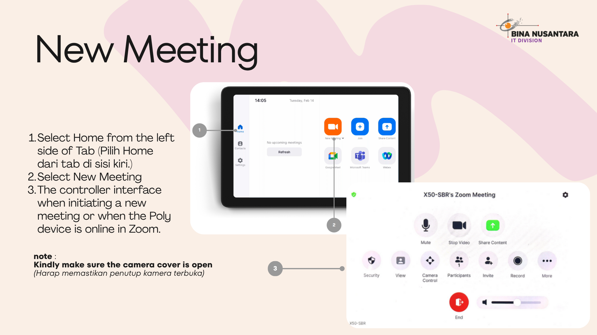
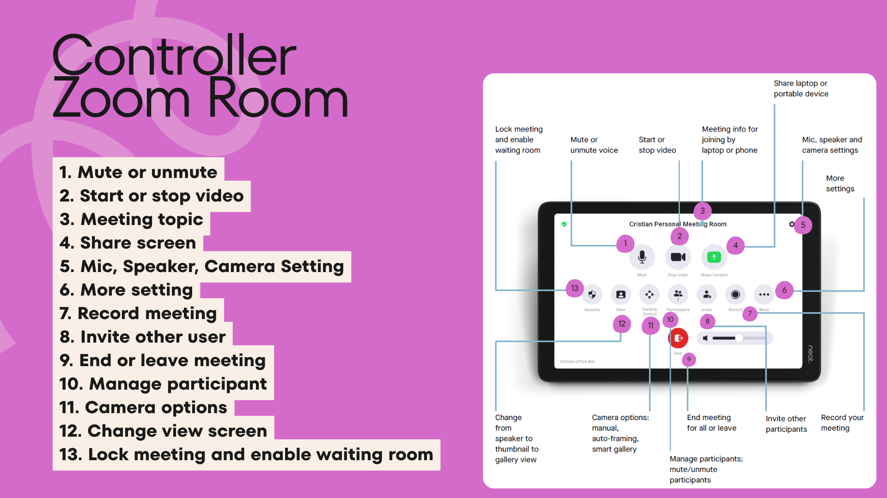
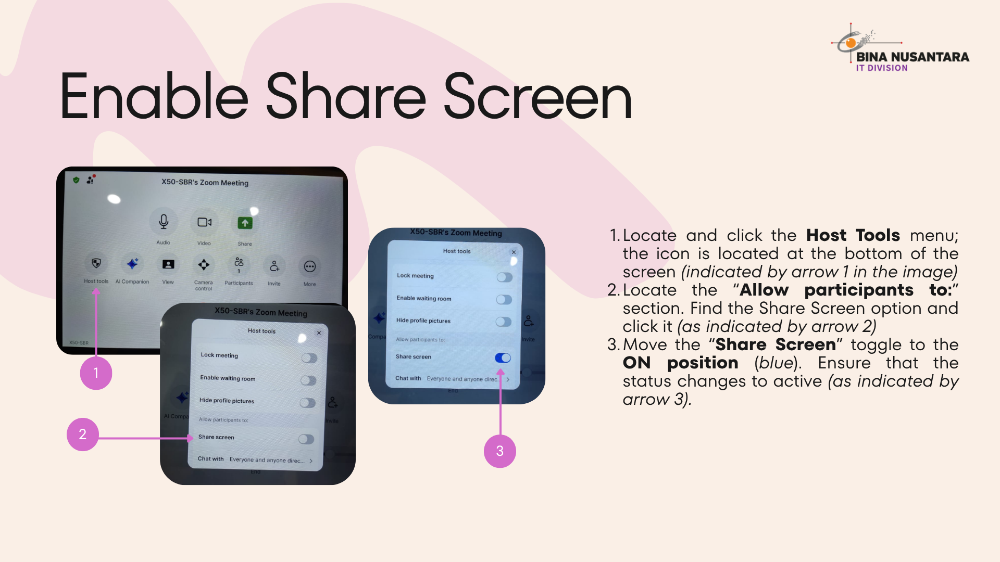
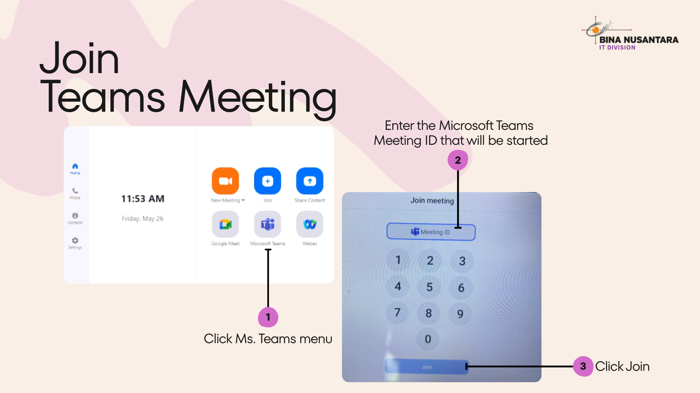

Guideline Poly Studio X50
Learn how to connect your laptop or mobile device to a meeting room equipped with video conferencing tools.
Before you begin
- Make sure your device has Access Wi-Fi
- Install your meeting app Zoom
- Ensure the meeting room system is turned on
Steps to connect
Step 1:
Enter the meeting room and power on the display or conferencing system.
Enter the meeting room and power on the display or conferencing system.
Step 2:
If a Zoom Meeting ID is not created, users can directly start a meeting using the “New Meeting” feature available on the Poly tab.
If a Zoom Meeting ID is not created, users can directly start a meeting using the “New Meeting” feature available on the Poly tab.

Step 2:
If a Meeting ID is already available, you can directly join the meeting through the Poly tab.
If a Meeting ID is already available, you can directly join the meeting through the Poly tab.

Step 3:
Controller Zoom Room
Controller Zoom Room

Step 4:
Enable Share Screen
Enable Share Screen

Step 5:
Join Teams Meeting
Join Teams Meeting

Tips
- If device not detected, try manual connection
- Check network connection
- Restart device if connection fails